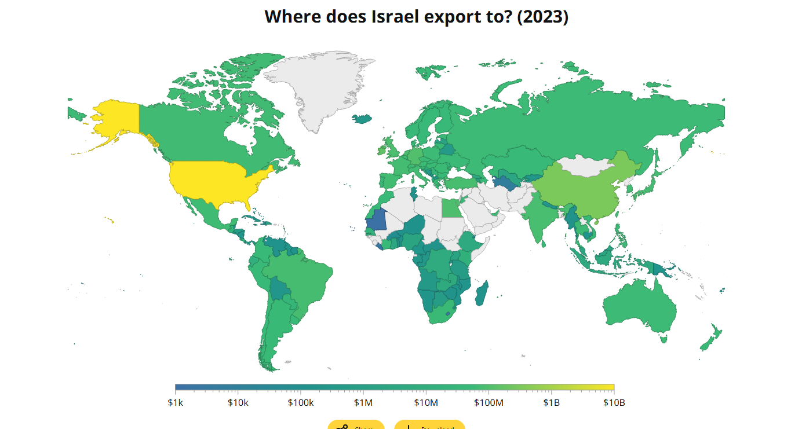

Belgium is not neutral. Its companies profit from genocide.
Target: OIP–Elbit
Activists: ~100
Date: 4 March 2024
Turnover OIP: €57,886,643 (2023)
Presentation of the action
On March 4, 2024, around 100 activists carried out a blockade against the company OIP-Elbit,
as
part of an international call to denounce the involvement of several arms companies in the
genocide of the Palestinian population perpetrated by the Israeli state in Gaza and, more
broadly, in its policy of occupation, colonization, and apartheid.
OIP (Optronics Instruments & Products NV) is a Belgian company specializing in optronics
(infrared cameras, night vision goggles, targeting systems, etc.), 99.95% owned by Elbit
System
Ltd., which is the largest private arms manufacturer in Israel and supplies 85% of the
drones
and most of the ground equipment used by the Israeli army. OIP is directly involved in the
crimes committed by the Israeli army against the Palestinian population in the occupied
territories. OIP generates profits that directly benefit its parent company, Elbit System,
but
also develops technologies and products that it makes available to Elbit System Ltd. In
2023,
OIP reported a turnover of €57,886,643.
The aim of the action was to block access to the OIP-Elbit building and bring their
activities to
a halt in order to impose an effective and immediate military embargo on weapons and
military
equipment destined for the Israeli state and its ongoing genocidal enterprise.
It also aimed to remind the public authorities of their responsibility in this matter and to
demand that they end their complicity in the crimes committed by the Israeli state, in
particular through the production of weapons on Belgian territory and their export to
Israel.
The action also aimed to raise awareness among citizens, businesses, and potential investors
of
the links between OIP and Elbit system Ltd. in order to encourage them to begin a process of
divestment.
This action is part of the Boycott, Divestment, Sanctions (BDS) campaign launched by
Palestinian
civil society and, in particular, the call for states to place the Israeli state under a
military embargo in order to put an end to the war crimes and crimes against humanity
committed
by it.
Présentation de l’action
Le 4 mars 2024, une centaine de militant.e.s a mené une action de blocage
à l’encontre de l’entreprise OIP-Elbit, dans le cadre d’un appel
international visant à dénoncer l’implication de plusieurs
entreprises
d’armement, dans le génocide de la population palestinienne perprétré
par l’Etat israélien à Gaza et plus largement dans la politique d’occupation,
de colonisation et d’apartheid menée par celui-ci.
OIP (Optronics Instruments & Products NV), est une entreprise belge spécialisée
dans l’optronique (camera infrarouge, lunette de vision nocturne, système de
visée...),
détenue à 99,95 % par Elbit System Ltd., qui est le plus grand fabricant d’armes
privé en Israël et qui fournit 85% des drones et la plupart des équipements
terrestres utilisés par l’armée israélienne[1].
OIP est directement impliquée dans les crimes commis par l’armée israélienne
à l’encontre de la population palestienne dans les territoires occupés.
En
effet, OIP génère des profits qui bénéficient directement
à
sa société mère, Elbit system Ltd. mais développe également
des technologies et produits qu’elle met à disposition de cette dernière. En
2023, OIP décalre un chiffre d’affaires de 57.886.643 d’euros.
L’action avait pour objectif de bloquer l’accès au bâtiment d’OIP-Elbit
et de mettre leurs activités à l’arrêt afin d’imposer un
embargo
militaire effectif et immédiat sur les armes et équipements militaires destinés
à l’état israëlien et à son entreprise génocidaire en
cours.
Elle visait également à rappeller aux pouvoirs publics leur responsabilité
en la matière et à exiger qu’ils mettent fin à leur complicité
dans les crimes commis par l’état israélien via notamment la production
d’armes
sur le territoire belge et leur exportation vers Israël.
L’action avait encore pour but de visibiliser les liens qu'entretiennent OIP et Elbit
system Ltd. auprès des citoyens et entreprises, potentiels investisseurs, afin de les
inciter à entamer un processus de désinvestissment.
Cette action s’inscrit dans le cadre de la campagne Boycott Désinvestissement
Sanction (ci-après BDS) lancée par la société civile palestienne
et
en particulier dans l’appel fait aux Etats à placer l’état israëlien
sous embargo militaire afin de mettre fin aux crimes de guerre et crimes contre l’humanité
commis lui.
Presentatie van de actie
Op 4 maart 2024 hebben ongeveer 100 activisten een blokkade uitgevoerd tegen het bedrijf
OIP-Elbit, als onderdeel van een internationale oproep om de betrokkenheid van verschillende
wapenbedrijven bij de genocide op de Palestijnse bevolking door de Israëlische staat in
Gaza en, meer in het algemeen, bij het beleid van bezetting, kolonisatie en apartheid aan de
kaak te stellen.
OIP (Optronics Instruments & Products NV) is een Belgisch bedrijf dat gespecialiseerd is
in
optronica (infraroodcamera's, nachtkijkers, richtsystemen, enz.), voor 99,95% eigendom van
Elbit
System Ltd., de grootste particuliere wapenfabrikant in Israël, die 85% van de drones
en
het grootste deel van de grondapparatuur levert die door het Israëlische leger wordt
gebruikt. OIP is rechtstreeks betrokken bij de misdaden die het Israëlische leger
begaat
tegen de Palestijnse bevolking in de bezette gebieden. OIP genereert winsten die
rechtstreeks
ten goede komen aan zijn moederbedrijf, Elbit System, maar ontwikkelt ook technologieën
en
producten die het ter beschikking stelt aan Elbit System Ltd. In 2023 rapporteerde OIP een
omzet
van € 57.886.643.
Het doel van de actie was om de toegang tot het OIP-Elbit-gebouw te blokkeren en hun
activiteiten
stil te leggen om een effectief en onmiddellijk militair embargo op te leggen op wapens en
militair materieel bestemd voor de Israëlische staat en zijn voortdurende genocidale
onderneming.
De actie had ook tot doel burgers, bedrijven en potentiële investeerders bewust te maken
van
de banden tussen OIP en Elbit System Ltd. om hen aan te moedigen een proces van
desinvestering
op gang te brengen.
Deze actie maakt deel uit van de Boycott, Divestment, Sanctions (BDS)-campagne die door het
Palestijnse maatschappelijk middenveld is gelanceerd, en in het bijzonder de oproep aan
staten
om de Israëlische staat onder een militair embargo te plaatsen om een einde te maken
aan de
oorlogsmisdaden en misdaden tegen de menselijkheid die door deze staat worden begaan.

Elbit System Ltd., the company that owns OIP.
Elbit System Ltd. is the main supplier to the Israeli army. The company supplies approximately
50% of Israel's total equipment, 85% of its air force's drone equipment, and 85% of its army's
equipment. This military-industrial complex has become the economic backbone of the State of Israel.
Between 2020 and 2024, Israel was the eighth largest arms exporter in the world.
A company profiting from genocide.
On 30 June 2025, the UN Special Rapporteur Francesca Albanese published a report on the financial gains of Elbit System Ltd.
Elbit System Ltd., l’entreprise propriétaire de OIP.
Elbit System Ltd. est le fournisseur principal de l’armée israélienne. L’entreprise fournit environ
50 % de l’équipement total d’Israël, 85 % de l’équipement en drones de l’armée de l’air et 85 % de
l’équipement de l’armée de terre. Ce complexe militaro-industriel est devenu l’épine dorsale
économique de l’État israélien. Entre 2020 et 2024, Israël était le huitième exportateur mondial d’armes.
Une entreprise qui fait du profit sur un génocide.
Le 30 juin 2025, la rapporteuse spéciale de l’ONU Francesca Albanese a publié un rapport sur les gains financiers d’Elbit System Ltd.
Elbit System Ltd., het bedrijf dat eigenaar is van OIP.
Elbit System Ltd. is de belangrijkste leverancier van het Israëlische leger. Het bedrijf levert
ongeveer 50 % van alle uitrusting van Israël, 85 % van de drone-uitrusting van de luchtmacht en
85 % van de uitrusting van het leger. Dit militair-industriële complex is de economische ruggengraat
van de staat Israël geworden. Tussen 2020 en 2024 was Israël de achtste grootste wapenexporteur ter wereld.
Een bedrijf dat profiteert van genocide.
Op 30 juni 2025 publiceerde VN-speciale rapporteur Francesca Albanese een rapport over de financiële winsten van Elbit System Ltd.
Since 2003, OIP has been directly owned by Elbit Systems, Israel’s largest arms manufacturer. The acquisition was made through Elbit’s subsidiary Elop Electro-Optics, embedding OIP into Elbit’s global network of arms production. This means that every OIP activity in Belgium feeds into Elbit’s broader strategy and revenues.
The European Union and Belgium both claim to regulate arms exports under international law. In practice, however, export licenses are granted despite clear risks of violations of humanitarian law. Arms or dual-use goods linked to Israel often pass through loopholes.
Flemish authorities granted 10 arms export licenses to Israel in 2022 worth over $2 million. These exports strengthen Elbit’s capacity to market its weapons abroad – often tested in Palestine before international sale.
OIP and Elbit share profits, contracts, technology, and personnel. Elbit’s takeover opened doors for OIP in Belgium and Europe. Employees move between both firms, giving Elbit direct access to NATO markets.
OIP was Elbit’s first European acquisition, a gateway into the EU defense sector. From Belgium, Elbit can expand into new markets, secure contracts, and strengthen European militarization.
Depuis 2003, OIP est détenue directement par Elbit Systems, le plus grand fabricant
d'armes d'Israël. L'acquisition a été réalisée par l'intermédiaire
de la filiale d'Elbit, Elop Electro-Optics, intégrant ainsi OIP dans le réseau
mondial de production d'armes d'Elbit. Cela signifie que toutes les activités d'OIP en
Belgique contribuent à la stratégie globale et aux revenus d'Elbit.
L'Union européenne et la Belgique affirment toutes deux réglementer les
exportations d'armes en vertu du droit international. Dans la pratique, cependant, des licences
d'exportation sont accordées malgré des risques évidents de violation du
droit humanitaire. Les armes ou les biens à double usage liés à Israël
passent souvent à travers les mailles du filet : « destinataires finaux »
incertains, application régionale incohérente et mécanismes de contrôle
faibles. Il en résulte que des entreprises belges comme OIP opèrent dans une zone
grise, approvisionnant une puissance occupante tandis que les gouvernements ferment les
yeux.
Malgré les démentis officiels, les autorités flamandes ont accordé 10
licences d'exportation d'armes vers Israël en 2022, pour une valeur totale de plus de 2
millions de dollars. Même lorsqu'elles sont présentées comme des «
composants » destinés à être utilisés en dehors d'Israël,
ces exportations renforcent la capacité d'Elbit à commercialiser ses armes
à l'étranger – des armes souvent testées en Palestine avant d'être
vendues à l'international. Tout transfert de matériel à Elbit renforce une
économie de guerre qui tire profit de l'occupation et du génocide.
L'OIP et Elbit ne se contentent pas de partager leurs profits, ils partagent également
leurs contrats, leurs technologies et leur personnel. Le rachat d'Elbit a ouvert des portes
à OIP en Belgique et en Europe : des navires de la marine belge équipés des
systèmes Seagull d'Elbit aux grands programmes de défense tels que le contrat de
44,8 millions d'euros pour les véhicules blindés Piranha III (2007) et le contrat
de 150 millions de dollars pour les « gilets intelligents » du Benelux (2015). Les
employés passent d'une entreprise à l'autre, et la présence d'OIP en
Belgique donne à Elbit un accès direct aux marchés de l'OTAN.
La stratégie internationale d'Elbit repose depuis longtemps sur l'acquisition de petites
entreprises à l'étranger afin de contourner les restrictions politiques et
industrielles en Israël. OIP a été sa première acquisition européenne,
une porte d'entrée dans le secteur de la défense de l'UE. Depuis la Belgique, pays
qui abrite le siège de l'OTAN, Elbit peut se développer sur de nouveaux marchés,
obtenir des contrats et renforcer son emprise sur la militarisation européenne. OIP n'est
pas une entreprise belge neutre : c'est une extension européenne de la machine de guerre
israélienne. Pour en savoir plus :
Sinds 2003 is OIP rechtstreeks eigendom van Elbit Systems, de grootste wapenfabrikant van Israël.
De overname vond plaats via Elbit's dochteronderneming Elop Electro-Optics, waardoor OIP werd geïntegreerd
in Elbit's wereldwijde netwerk van wapenproductie. Dit betekent dat alle activiteiten van OIP in
België bijdragen aan de bredere strategie en inkomsten van Elbit. Lees meer: Gresea –
OIP en de Israëlische wapenindustrie (2025)
Juridische mazen en vage controles
Zowel de Europese Unie als België beweren dat zij de wapenexport reguleren op basis van het
internationaal recht. In de praktijk worden echter exportvergunningen verleend ondanks
duidelijke risico's op schendingen van het humanitair recht. Wapens of goederen voor tweeërlei
gebruik die verband houden met Israël vallen vaak door mazen in de wet: onzekere “eindontvangers”,
inconsistente regionale handhaving en zwakke toezichtmechanismen. Het resultaat is dat Belgische
bedrijven zoals OIP in een grijs gebied opereren en een bezettingsmacht bevoorraden terwijl
regeringen de andere kant opkijken. Lees meer: Vredesactie
& IPIS – Belgische wapenexport naar Israël (2024)
Exportvergunningen naar Israël
Ondanks officiële ontkenningen hebben de Vlaamse autoriteiten in 2022 tien
wapenexportvergunningen aan Israël verleend ter waarde van meer dan 2 miljoen dollar. Zelfs
wanneer deze worden gepresenteerd als “onderdelen” voor gebruik buiten Israël,
versterken deze exporten het vermogen van Elbit om zijn wapens in het buitenland op de markt te
brengen – wapens die vaak in Palestina worden getest voordat ze internationaal worden
verkocht. Elke overdracht van materiaal aan Elbit versterkt een oorlogseconomie die profiteert
van bezetting en genocide. Lees meer: Electronic
Intifada – Wapenhandelaar liegt over export naar Israël en Electronic
Intifada – Waarom niemand moet toasten op het standpunt van België over Gaza
Winst, kennis en militaire programma's
OIP en Elbit delen niet alleen winst, maar ook contracten, technologie en personeel. De overname
door Elbit opende deuren voor OIP in België en Europa: van Belgische marineschepen met
Elbit's Seagull-systemen tot grote defensieprogramma's zoals het contract van 44,8 miljoen
euro voor Piranha III-pantservoertuigen (2007) en het contract van 150 miljoen dollar voor
“slimme vesten” in de Benelux (2015). Medewerkers wisselen tussen beide bedrijven en
dankzij de aanwezigheid van OIP in België heeft Elbit directe toegang tot de NAVO-markten.
Lees meer: Electronic
Intifada – Israëlische Elbit aast op groot Belgisch wapencontract en C4ISRNET
– Elbit wint Belneux smart vest.
Een toegangspoort voor Elbit in Europa
De internationale strategie van Elbit is al lang gebaseerd op het overnemen van kleinere
bedrijven in het buitenland om politieke en industriële beperkingen in Israël te
omzeilen. OIP was de eerste Europese overname, een toegangspoort tot de defensiesector van de
EU. Vanuit België – een land waar het hoofdkwartier van de NAVO is gevestigd –
kan Elbit uitbreiden naar nieuwe markten, contracten binnenhalen en zijn greep op de Europese
militarisering versterken. OIP is geen neutraal Belgisch bedrijf: het is een Europese
uitbreiding van de Israëlische oorlogsmachine. Lees meer: Gresea
– OIP en de Israëlische wapenindustrie (2025) en Defense
Update – Elbit krijgt opdracht om Belgische Piranha's uit te rusten met 30 mm
geschutskoepels
The ongoing trial.
Today, seven activists who participated in the action on March 4, 2024, are being prosecuted in
the Oudenaarde District Court by OIP-Elbit, which is claiming more than €10,000 and up to
€100,000 in damages. Through this legal action, OIP-Elbit is attempting to deny its active
collaboration in the ongoing genocide in Gaza, and is seeking to intimidate those who denounce
its responsibility and to suppress any form of movement in support of the Palestinian
people.
This lawsuit is part of a civil proceeding, which means that it is OIP-ELBIT, not the Belgian
state, that is suing these activists for the financial losses and moral damage allegedly
suffered by the company during the blockade action. As a reminder, OIP-Elbit is a high-tech arms
company with an annual turnover for 2023 of €57,886,643 and a profit of €2,647,538[1]. ELBIT Systems, meanwhile, recorded an increase in
profits in the first quarter of 2025, with 32% of its turnover coming from orders delivered to
the Israeli army[2].
————————
The outcome of this trial is important not only for actions of solidarity with the Palestinian
struggle, but more generally for any mobilization aimed at denouncing the actions and
responsibility of a company. Indeed, this trial raises a fundamental legal question in the
Belgian legal system, namely whether freedom of expression and the right to protest should take
precedence over the economic interests of a company, or whether, on the contrary, these
fundamental rights and freedoms could be violated when it comes to protecting the financial
interests of companies, such as those of arms cartels.
Fondation Marius Jacob
BE65 5230 8110 3896
!! Communication !! : blocade
It is therefore absolutely necessary to support the activists prosecuted by OIP-Elbit, to
mobilize around this trial, and to attend in large numbers at the rally scheduled for February
17, 2026, at 10 a.m.
Aujourd’hui, sept militant.e.s ayant participé à l’action du 4 mars
2024, sont poursuivis devant le tribunal de première instance d’Oudenaerde par
OIP-Elbit qui leur réclame plus de 10.000 euros et jusqu’à 100.000 euros de
dommages et intérêts. Par cette action en justice, OIP-Elbit tente de nier sa
collaboration active dans le génocide en cours à Gaza, et cherche à
intimider les voix qui dénoncent sa responsabilité et à réprimer
toute forme de mouvement de soutien au peuple palestinien.
Ce procès s’incrit dans le cadre d’une procédure civile, ce qui
signifie que c’est bien OIP-ELBIT et non pas l’Etat belge, qui poursuit ces
militants en justice pour les pertes financières et le dommage moral prétendument
subis par l’entreprise lors de l’action de blocage. Pour rappel, OIP-Elbit est une
entreprise d’armement de haute technologie dont le chiffre d’affaire annuel pour l’année
de 2023 était de 57.886.643 d’euros avec un bénéfice de 2.647.538 d’euros[1]. ELBIT system a quant à elle, enregistré
au premier trimestre de l’année 2025, une augmentation de ses bénéfices
tandis que 32% de son chiffre d’affaire provient des commandes livrées à l’armée
israélienne[2].
L’issue de ce procès est non seulement importante pour les actions de solidarité
avec la lutte palestienne mais de manière générale, pour toute mobilisation
qui viserait à dénoncer les actions et la responsabilité d’une
entreprise. En effet, ce procès soulève une question de droit fondamentale dans l’ordre
juridique belge, celle de déterminer si la liberté d’expression et le droit
de manifester doivent prévaloir sur les intérêts économiques d’une
entreprise ou si au contraire, ces droits et libertés fondamentales pourraient être
bafoués lorsqu’il s’agit de protéger les intérêts
financiers des entreprises, comme en l’occurence ceux des cartels d’armements.
Il est donc absolument nécessaire de soutenir les militant.e.s poursuivis par OIP-Elbit,
de se mobiliser autour de ce procès et d’être présent.e.s en nombre au
rassemblement prévu le 17 février 2026 à 10h devant le Tribunal de
première instance d’Oudenaerde.
Toute participation à la cagnotte de soutien pour faire face aux frais de justice est
également la bienvenue.
Vandaag worden zeven activisten die hebben deelgenomen aan de actie van 4 maart 2024 voor de
rechtbank van eerste aanleg van Oudenaarde vervolgd door OIP-Elbit, dat meer dan 10.000 euro en
tot 100.000 euro schadevergoeding eist. Met deze rechtszaak probeert OIP-Elbit zijn actieve
medewerking aan de genocide in Gaza te ontkennen en wil het de stemmen die zijn
verantwoordelijkheid aan de kaak stellen intimideren en elke vorm van steun aan het Palestijnse
volk onderdrukken.
Deze rechtszaak kadert in een burgerlijke procedure, wat betekent dat het OIP-ELBIT is en niet de
Belgische staat die deze activisten voor de rechter daagt voor de financiële verliezen en
morele schade die het bedrijf zou hebben geleden tijdens de blokkadeactie. Ter herinnering:
OIP-Elbit is een hightech wapenbedrijf met een jaaromzet van 57.886.643€ in 2023 en een
winst van 2.647.538€[1]. ELBIT system noteerde in het
eerste kwartaal van 2025 een stijging van zijn winst, terwijl 32% van zijn omzet afkomstig is
van orders die aan het Israëlische leger zijn geleverd[2].
De uitkomst van dit proces is niet alleen belangrijk voor de solidariteitsacties met de
Palestijnse strijd, maar ook in het algemeen voor elke mobilisatie die tot doel heeft de acties
en verantwoordelijkheid van een bedrijf aan de kaak te stellen. Dit proces werpt namelijk een
fundamentele rechtsvraag op in het Belgische rechtssysteem, namelijk of de vrijheid van
meningsuiting en het recht om te demonstreren voorrang moeten hebben op de economische belangen
van een bedrijf, of dat deze fundamentele rechten en vrijheden juist mogen worden geschonden
wanneer het gaat om de bescherming van de financiële belangen van bedrijven, zoals in dit
geval die van wapenkartels.
Het is dan ook absoluut noodzakelijk om de door OIP-Elbit vervolgde activisten te steunen, zich
te mobiliseren rond dit proces en massaal aanwezig te zijn op de bijeenkomst die op 17 februari
2026 om 10 uur voor de Rechtbank van Eerste Aanleg in Oudenaarde is gepland.
Elke bijdrage aan de steunpot om de gerechtskosten te dekken is ook van harte welkom.